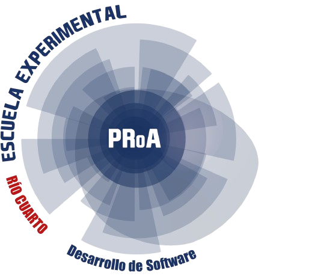
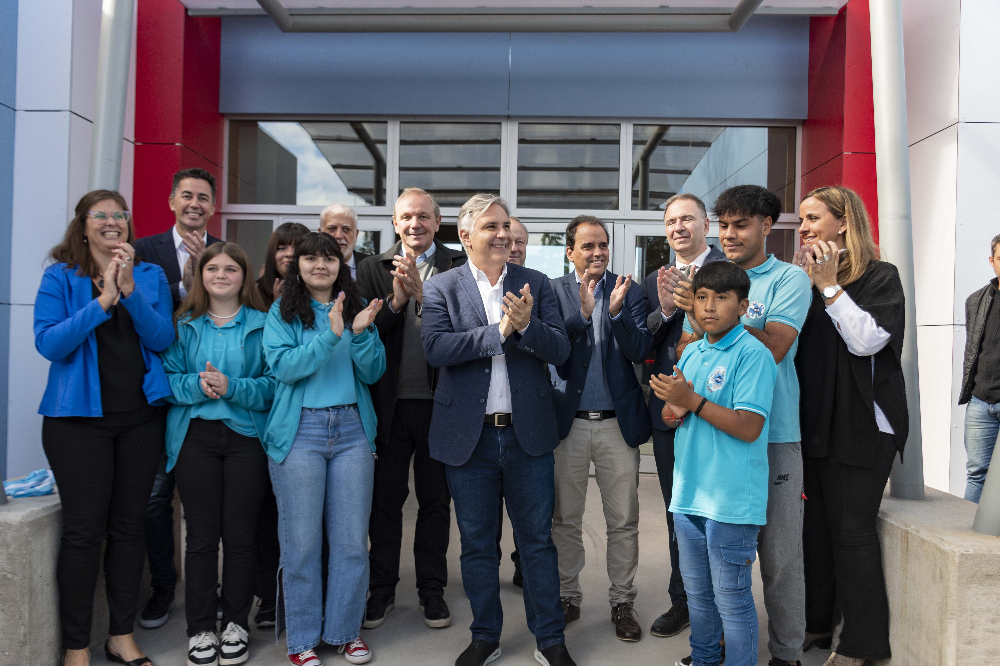

La escuela ProA es un modelo de innovación educativa, que forman jóvenes especializados en Desarrollo de Software y Énfasis en TICs, saberes claves para el desarrollo productivo de nuestra región.
En estas escuelas, los estudiantes adquieren conocimientos tecnológicos esenciales para su rápida inserción laboral. Constituyen un nuevo modelo de escuela, que vincula la cultura escolar con las culturas juveniles a través del uso de las nuevas tecnologías.
Desde primer año los alumnos aprenden a programar y a escribir códigos para automatizar procesos. Se ponen en juego operaciones mentales complejas.
Inscripciones de 1° año del 2025. Se realizan desde 15/10 al 20/10.
Presentan fotocopia del DNI del estudiante.
El sorteo de vacantes es precencial el día 30/10 a las 10hs.